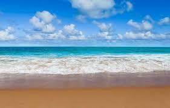

Todas as espécies de cavalos-marinhos estão em perigo de extinção. Uma das causas é pesca predatória e a destruição de habitat. Outra causa é o captura frequente deles para serem usados como peça de decoração ou simplesmente serem criados em um aquário.Existem três espécies brasileiras de cavalos-marinhos, o Hippocampus erectus, Hippocampus reidi e o Hippocampus patagonicus, que foi descoberto em 2004.
As espécies desse gênero são carnívoras.[2] Alimentam-se de pequenos crustáceos,[2][1] moluscos, vermes, e plâncton,[2] que são sugados através de suas bocas tubulares.[2] Como eles não tem o costume de irem atrás de alimento, eles comem o que estiver passando por eles. A cauda desses animais é longa e preênsil, o que permite que eles se agarrem às plantas submarinas enquanto se alimentam.